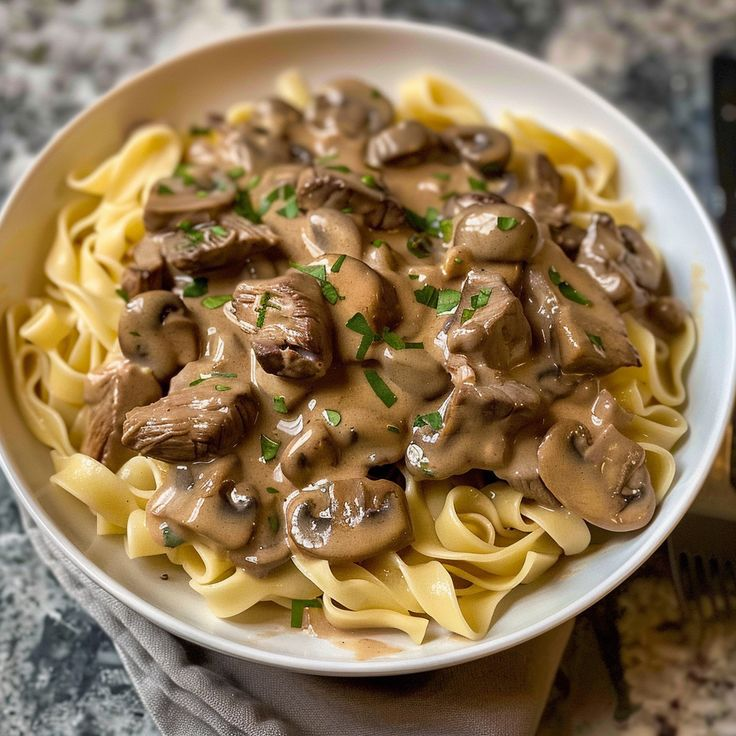
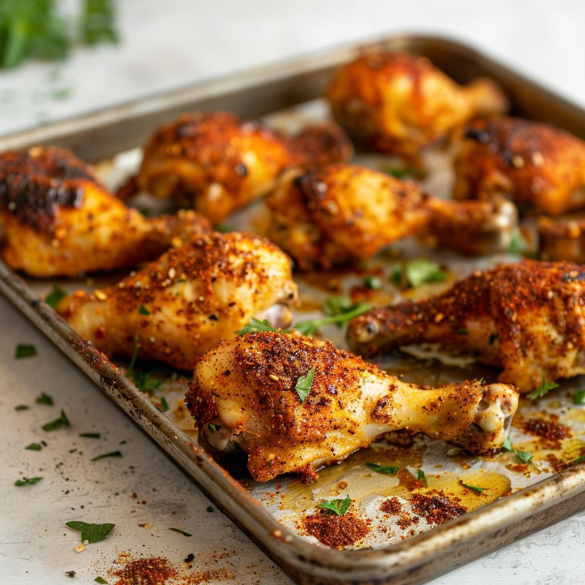

Welcome to our interactive cooking courses, where you can explore the exciting world of cooking! Below you'll find some of our fun and easy-to-follow lessons, perfect for all chefs. Each lesson is designed to be engaging, safe, and educational, helping you develop essential kitchen skills while creating delicious treats.
Learn how to make a grilled cheese sandwich in a nonstick pan with buttered bread and American Cheddar for a classic hot sandwich.
Step 1:Preheat a nonstick skillet over medium heat. Generously butter one side of a slice of bread. Place bread butter-side down in the hot skillet; add 1 slice of cheese. Butter a second slice of bread on one side and place butter-side up on top of cheese.
Step 2:Cook until lightly browned on one side; flip over and continue cooking until cheese is melted. Repeat with remaining 2 slices of bread, butter, and slice of cheese.
This rich and creamy beef stroganoff recipe is made with ground beef and served with egg noodles. It's super simple to prepare, and ready to serve in under 30 minutes making it a great choice for busy weeknights. Garnish with freshly chopped parsley.
Step 1:Gather all ingredients.
Step 2:Sauté ground beef in a large skillet over medium heat until browned and crumbly; 5 to 10 minutes.
Step 3:Meanwhile, fill a large pot with lightly salted water and bring to a rapid boil. Cook egg noodles at a boil until tender yet firm to the bite, 7 to 9 minutes. Drain and set aside.
Step 4:Drain and discard any fat from the cooked beef. Stir condensed soup and garlic powder into the beef. Simmer for 10 minutes, stirring occasionally.
Step 5:Drain and discard any fat from the cooked beef. Stir condensed soup and garlic powder into the beef. Simmer for 10 minutes, stirring occasionally.
To make these air fryer chicken legs—crispy on the outside, tender and juicy on the inside—all you need is 5 ingredients and an air fryer. These chicken drumsticks are quick, easy, and seasoned just right.
step1 Preheat an air fryer to 400 degrees F (200 degrees C) according to manufacturer’s instructions. Combine garlic powder, paprika, salt, and pepper in a small bowl.
step 2 Place drumsticks on a clean work surface. Sprinkle spice mix evenly over all sides of the drumsticks.
step 3 Place drumsticks in the basket of the air fryer and cook for 10 minutes. Using tongs, flip chicken over and cook for 10 minutes more. Rest for 5 minutes before serving. An instant-read thermometer inserted near the bone should read 165 degrees F (74 degrees C).